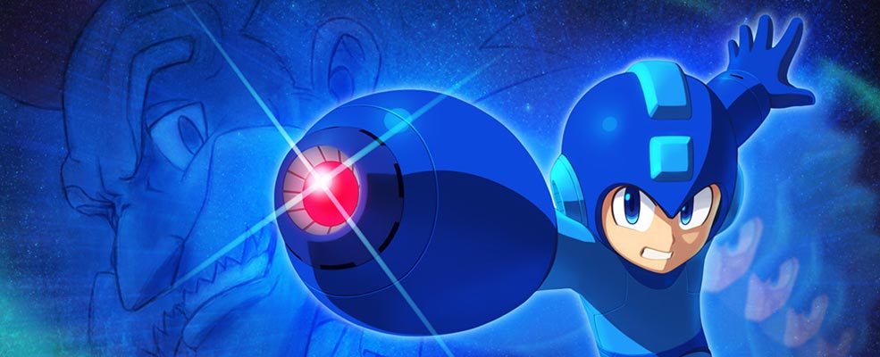
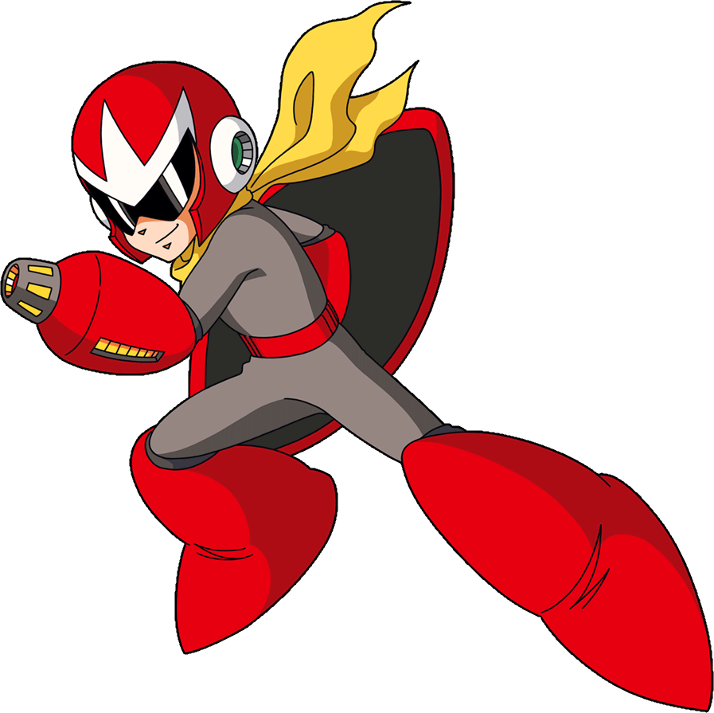
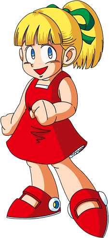
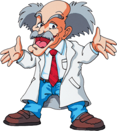

Criado em 1987 pela Capcom para o Nintendo Entertainment system(NES),
Rock man ou Mega man foi uma das maiores franquias dos anos 80 tendo
11 jogos da linha normal, chegando o 12º em 2027, após um hiato da série
de jogos, a Capcom decidiu lançar mais jogo mostrando uma parte da
história do robô azul mais querido do mundo dos jogos.
A saga Mega man tem muitos detalhes interessantes, uma deles é sua
mecânica de pedra, papel e tesoura, quando Mega man vence um Robot Master
ele ganha sua habilidade e essa habilidade é a fraqueza de outro Robot Master,
outro detalhe muito interessante é a ligação entre os Robot Masters e os fãs,
já que a partir do segundo jogo, a Capcom fez um concurso para os Robot Masters
onde os fãs começaram a fazer os seus designs, e os vencedores ganhavam prêmios.

Mega man é um robô criado por Dr Thomas Light no ano de 20XX, na era de ouro da robótica,
na sua criação o seu nome era Rock mas após a invasão de Dr Wily e o roubo de outros robôs pela
mão do mesmo, Dr Light atende aos pedidos de Rock, o modifica para se tornar um robô de combate
para enfrentar as invenções roubadas por Dr Wily agora chamadas de Robot Masters.

Dr Thomas Light é o criador de Mega man e de muitos outros robôs,
além de um dos maiores gênios em robótica de sua era, ex colega de
Doutorado e seu maior rival, Dr Wily.

Proto man é a primeira criação de Thomas Light, o fazendo irmão mais
velho de Mega man, antes tinha sido dado como desativado por Thomas Light
por nunca mais ter o encontrado, mas na verdade ele tinha ficado com pouca
energia e acabou sendo encontrado por Wily que acaba consertando ele,
e o usando como arma contra Mega man, mas após o primeiro contato com
Mega man decide trair Wily e guia Mega man contra os robot masters.

Roll é a irmã de Mega man, a terceira criação de Thomas Light,
ela acaba não tendo tanto aprofundamento nos jogos, mais diversas
vezes ela ajuda Mega man em suas aventuras e embates contra Wily.

Dr Albert Wily é o principal antagonista da série Mega man,
um homem que sempre possuiu inveja de seu colega Thomas Light,
e com essa inveja acaba decidindo mostrar que é melhor que
Thomas Light, tomando o mundo com seus robot masters.